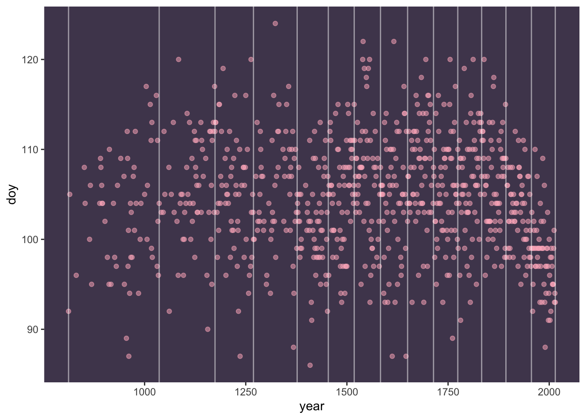

Chapter 3 Week 2: Linear models and causal inference
3.1 Class 1: Geocentric models
Before class, be sure to watch the lecture by McElreath.
3.2 Class 2: Categories (and curves)
Before class, be sure to watch the lecture by McElreath.
3.2.1 Slides
This lecture is based on Chapters 4 and 5 in Statistical Rethinking by Richard McElreath.
3.2.2 Curves (splines)
We won’t have time to address curves in class, and McElreath doesn’t give you a lot of code to work with in the lecture. Here’s how to reproduce his spline model from the lecture.
3.2.2.1 Data preparation
## mean sd 5.5% 94.5% histogram
## year 1408.000000 350.8845964 867.77000 1948.23000 ▇▇▇▇▇▇▇▇▇▇▇▇▁
## doy 104.540508 6.4070362 94.43000 115.00000 ▁▂▅▇▇▃▁▁
## temp 6.141886 0.6636479 5.15000 7.29470 ▁▃▅▇▃▂▁▁
## temp_upper 7.185151 0.9929206 5.89765 8.90235 ▁▂▅▇▇▅▂▂▁▁▁▁▁▁▁
## temp_lower 5.098941 0.8503496 3.78765 6.37000 ▁▁▁▁▁▁▁▃▅▇▃▂▁▁▁## vars n mean sd median trimmed mad min max
## year 1 1215 1408.00 350.88 1408.00 1408.00 450.71 801.00 2015.00
## doy 2 827 104.54 6.41 105.00 104.54 5.93 86.00 124.00
## temp 3 1124 6.14 0.66 6.10 6.11 0.61 4.67 8.30
## temp_upper 4 1124 7.19 0.99 7.04 7.10 0.92 5.45 12.10
## temp_lower 5 1124 5.10 0.85 5.14 5.10 0.72 0.75 7.74
## range skew kurtosis se
## year 1214.00 0.00 -1.20 10.07
## doy 38.00 0.00 -0.15 0.22
## temp 3.63 0.40 0.11 0.02
## temp_upper 6.65 1.05 1.71 0.03
## temp_lower 6.99 -0.17 1.88 0.03Note that some of the values for doy (day of year) are missing. The quap() function can’t handle missingness, so we’ll remove those rows before proceeding.
Next we set up an arbitrary number of knots. Knots divide our data into \(N_{knots}+1\) equal bins, such that each bin has the same number of data points. McElreath chooses 15 knots.
## 0% 7.142857% 14.28571% 21.42857% 28.57143% 35.71429% 42.85714% 50%
## 812 1036 1174 1269 1377 1454 1518 1583
## 57.14286% 64.28571% 71.42857% 78.57143% 85.71429% 92.85714% 100%
## 1650 1714 1774 1833 1893 1956 2015To visualize how our data have been partitioned:
d2 %>%
ggplot(aes(x = year, y = doy)) +
geom_point(color = "#ffb7c5", alpha = 1/2) +
geom_vline(xintercept = knot_list, color = "white", alpha = .5) +
theme(panel.grid = element_blank(),
panel.background = element_rect(fill = "#4f455c"))
Next, we’ll use functions in the spline package to create basis spline functions based on these knots
3.2.2.2 Mathematical model and quap()
Here is the mathematical model for the spline model:
\[\begin{align*} D_i &\sim \text{Normal}(\mu_i,\sigma) \\ \mu_i &= \alpha + \sum^K_{k=1} w_k B_{k,i} \\ \alpha &\sim \text{Normal}(100,10) \\ w_j &\sim \text{Normal}(0,10) \\ \sigma &\sim \text{Exponential}(1) \end{align*}\]
And here’s how we can fit this using quap(). Note that this is the first use of the start function, which gives the estimation algorithm a start value. This can be helpful if you find that models are not converging.